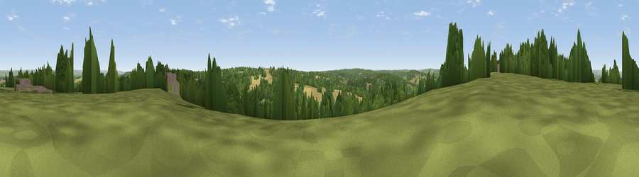

Viewpoint near Goudhurst
#27850 in England · top 31% of its area beats it · near GoudhurstThe view, rendered

A 360° render of this exact spot computed from the terrain model, tree cover and land cover — summer colours, afternoon light, calibrated against photographs of famous viewpoints. Real trees, hedges and buildings will differ in detail.
The panorama
Grey silhouette: terrain skyline in each direction (720 bearings, Earth curvature and refraction included). Dashed green: skyline with trees (+15 m) and buildings (+8 m) as obstacles. Blue strip: how far the ground is visible on each bearing.
Where the view opens
Wedge length = distance to the farthest visible ground on that bearing (vegetation-aware). Rings at 10, 25 and 50 km.
What fills the view
42% woodland · 28% grassland · 28% cropland · 2% built-up
Angular shares of the visible panorama (visual magnitude), not map area. Landscape diversity 0.50 (0–1 Shannon).
Key numbers
More beautiful places nearby
The staircase of upgrades: each row has a higher view potential than everything closer. Driving times are estimates from straight-line distance, calibrated against real road routing — check an actual route before setting out.
| Place | Direction | Drive | Score |
|---|---|---|---|
| Viewpoint near Goudhurst | W · 1 km | ~3 min | 47.2 |
| Blackbush Wood Hill | SSE · 2 km | ~6 min | 53.5 |
| Viewpoint near Brenchley | NW · 7 km | ~15 min | 55.0 |
| Best Beech Hill | WSW · 13 km | ~24 min | 55.6 |
| Birchetts Hill | NNW · 16 km | ~28 min | 56.3 |
| Viewpoint near Bidborough | WNW · 17 km | ~30 min | 57.2 |
| Brightling Obelisk [Brightling Down] | SSW · 18 km | ~31 min | 69.1 |
| Viewpoint near Three Oaks | SSE · 27 km | ~43 min | 69.3 |
51.11211, 0.47691 · source: screening · position refined by local search. Computed location — check access rights before visiting.